Explore Osaka
A Brief History
Osaka, historically known as the 'Kitchen of Japan', is the nation's undisputed epicenter of culinary indulgence, energetic nightlife, and unbridled mercantile spirit. Unlike the reserved elegance of neighboring Kyoto, Osaka thrives on its flamboyant, neon-lit streets, towering skyscrapers, and incredibly welcoming locals. From the historic grandeur of Osaka Castle to the dizzying sensory overload of the Dotonbori entertainment district, the city offers an electrifying, deeply authentic urban adventure that perfectly encapsulates the vibrant soul of the Kansai region.
Attractions Map
Top Sights & Activities
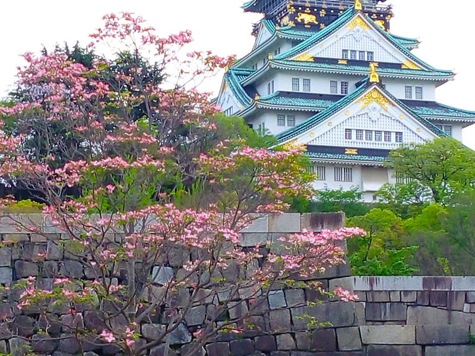
Osaka Castle
Osaka Castle is a Japanese castle in Chūō-ku, Osaka, Japan. The castle is one of Japan's most famous landmarks and played a major role in the unification of Japan during the sixteenth century of the Azuchi–Momoyama period.
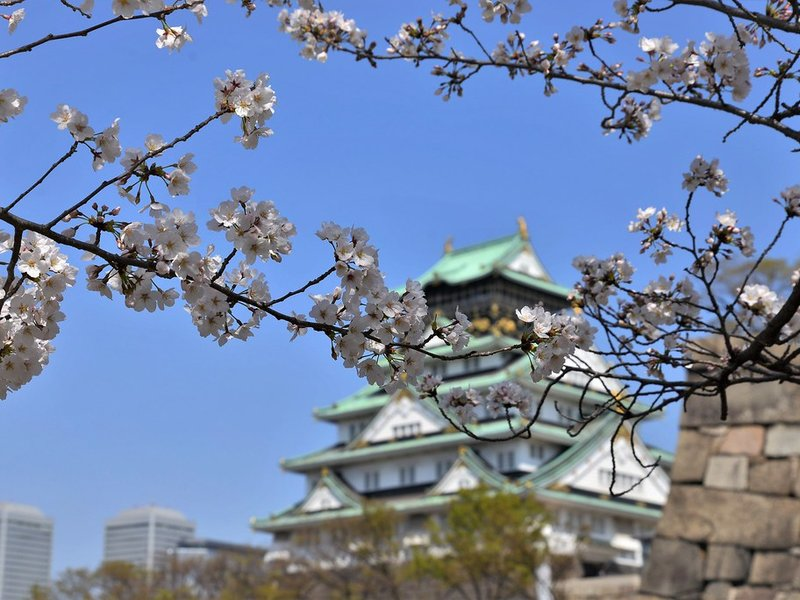
Nishinomaru Garden
Osaka Castle is a Japanese castle in Chūō-ku, Osaka, Japan. The castle is one of Japan's most famous landmarks and played a major role in the unification of Japan during the sixteenth century of the Azuchi–Momoyama period.
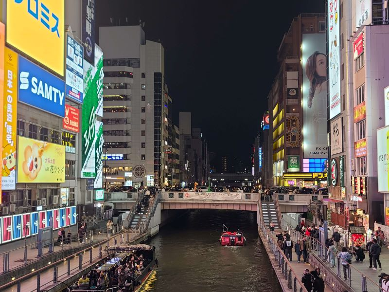
Dotonbori
Dōtonbori or Dōtombori is a district in Osaka, Japan. Known as one of Osaka's principal tourist and nightlife areas, the area runs along the Dōtonbori canal from Dōtonboribashi Bridge to Nipponbashi Bridge in the Namba district of the city's Chūō ward. Historically a theater district, it is now a popular nightlife and entertainment area characterized by its eccentric atmosphere and large illuminated signboards.
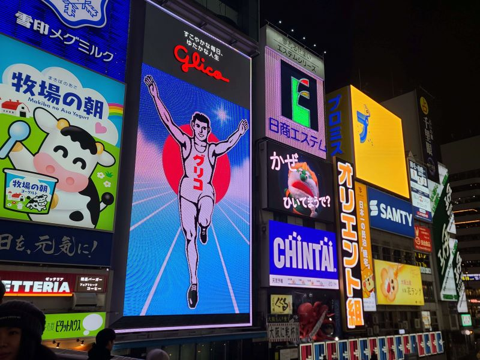
Glico Sign Dotonbori
Dōtonbori or Dōtombori is a district in Osaka, Japan. Known as one of Osaka's principal tourist and nightlife areas, the area runs along the Dōtonbori canal from Dōtonboribashi Bridge to Nipponbashi Bridge in the Namba district of the city's Chūō ward. Historically a theater district, it is now a popular nightlife and entertainment area characterized by its eccentric atmosphere and large illuminated signboards.
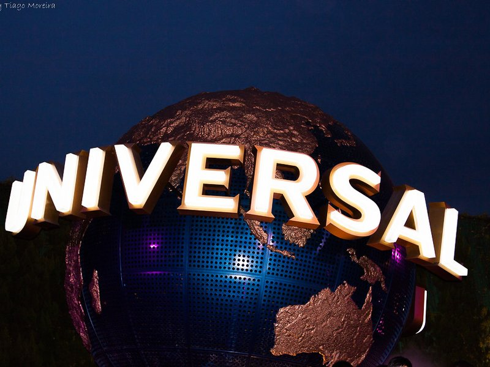
Universal Studios Japan
Universal Studios Japan is a theme park located in Osaka, Japan. Opened on March 31, 2001, it is one of six Universal Studios theme parks worldwide and was the first to open outside the United States. The park is owned and operated by USJ LLC, a wholly owned subsidiary of Comcast NBCUniversal.
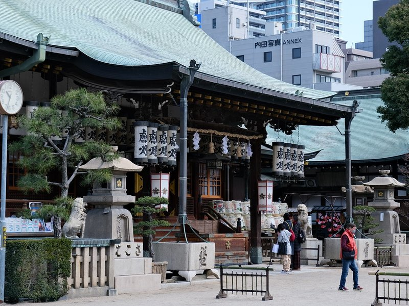
Osaka Tenmangu Shrine
The Osaka Tenmangū Shrine is a Shinto shrine and one of Tenmangū founded in AD 949 in Osaka by Emperor Murakami. The Tenjin Festival is held here annually from 24 July to 25 July. The shrine has been periodically destroyed by fire, with the present entrance hall and gate built in 1845.
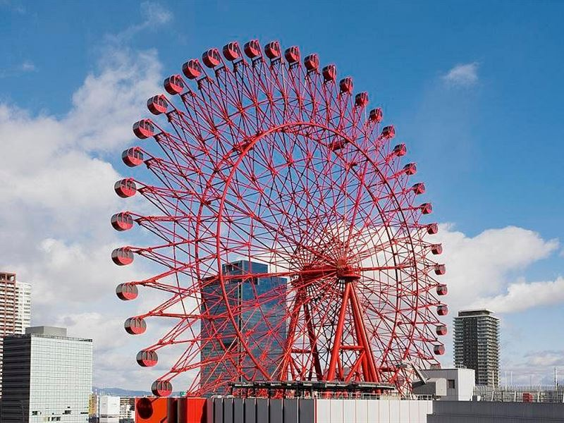
Hep-Five Ferris Wheel
HEP is a major shopping mall and entertainment center in the Umeda commercial district of Kita-ku, Osaka, Japan. It is a shopping mall consisting of a HEP Five and HEP Navio. HEP stands for "Hankyu Entertainment Park".
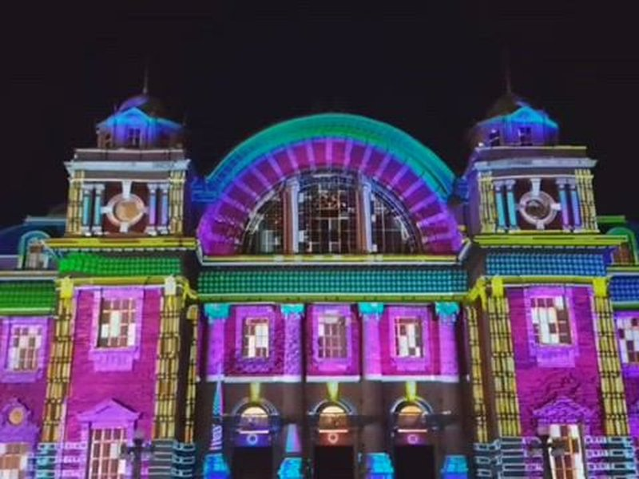
Osaka City Central Public Hall
Osaka Castle is a Japanese castle in Chūō-ku, Osaka, Japan. The castle is one of Japan's most famous landmarks and played a major role in the unification of Japan during the sixteenth century of the Azuchi–Momoyama period.
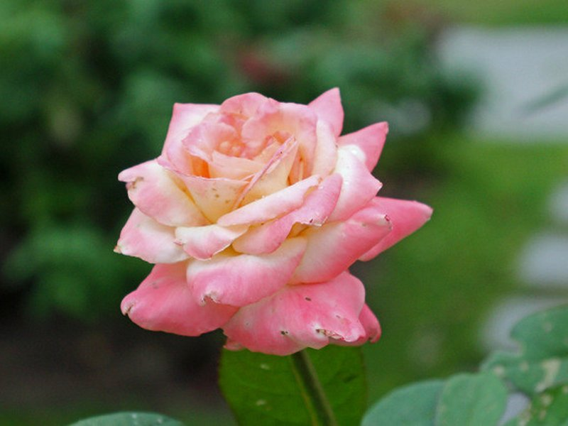
Nakanoshima Rose Garden
Nakanoshima is a 3 km long and 50 hectares narrow sandbank in Kita-ku, Osaka city, Japan, that divides the Kyū-Yodo into the Tosabori and Dōjima rivers. Many governmental and commercial offices, museums and other cultural facilities are located on Nakanoshima.
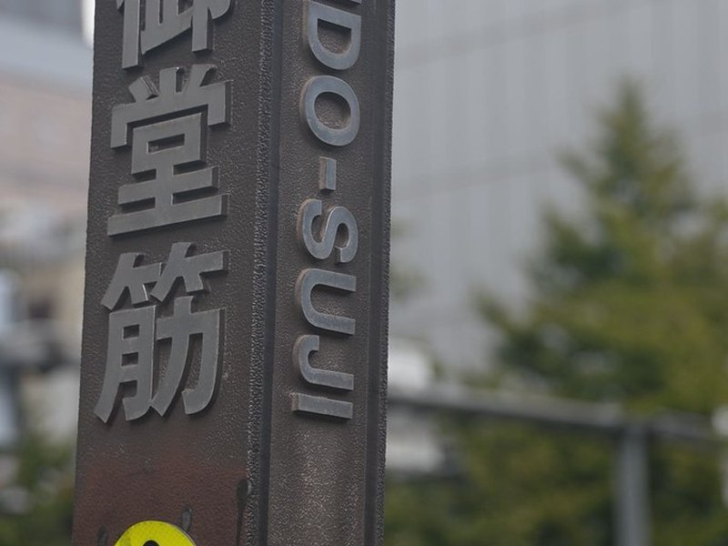
Mido-Suji
Shinsaibashi is a district in the Chūō-ku ward of Osaka, Japan and the city's main shopping area. At its center is Shinsaibashi-suji, a covered shopping street, that is north of Dōtonbori and Sōemonchō, and parallel and east of Mido-suji street. Associated with Shinsaibashi, and west of Mido-suji street, is Amerika-mura, an American-themed shopping area and center of Osaka's youth culture.
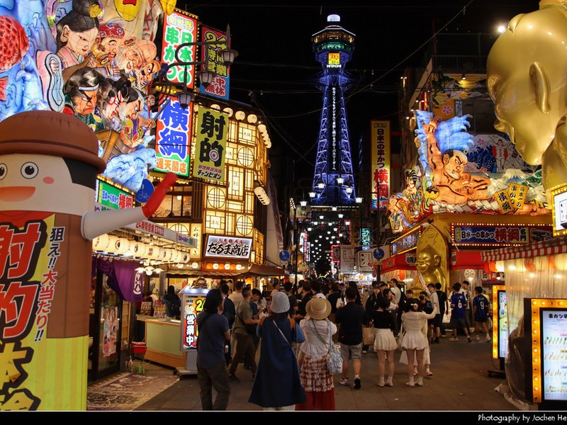
Tsutenkaku
Tsūtenkaku is a tower and landmark of Osaka, Japan, and advertises the Hitachi company. It is located in the Shinsekai district of Naniwa-ku, Osaka. Its total height is 108 metres ; the main observation deck is at a height of 91 metres.
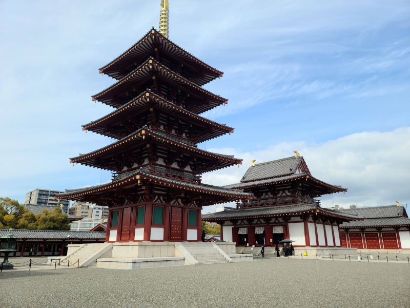
Shitenno-ji
Shitennō-ji is a Buddhist temple in Ōsaka, Japan. It is also known as Arahaka-ji, Nanba-ji/Naniwa-daiji, or Mitsu-ji 御津寺. The temple is sometimes regarded as the first Buddhist and oldest officially administered temple in Japan, although the temple complex and buildings have been rebuilt over the centuries, with the last reconstruction taking place in 1963.
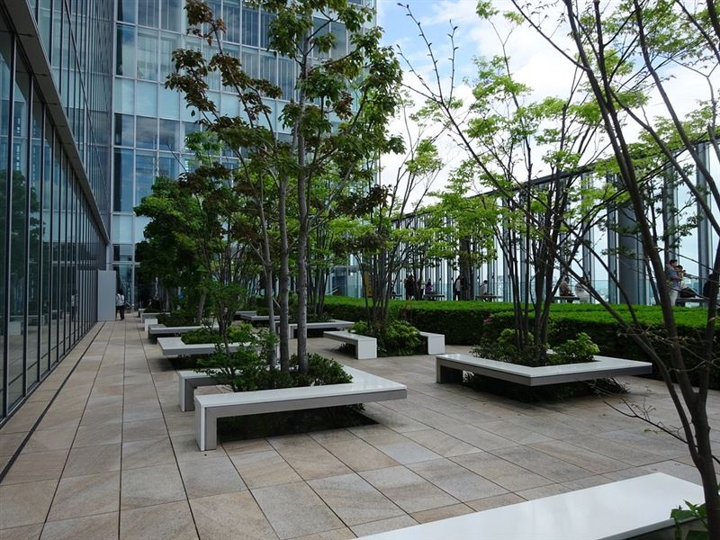
Abeno Harukas - 16th Floor Garden
Abeno Harukas is a multi-purpose commercial facility in Abenosuji Itchome, Abeno-ku, Osaka, Japan. It consists of the New Annex, Eastern Annex and a supertall skyscraper, Abeno Harukas. The building is 300 m tall and has 62 floors; it was the tallest building in Japan from 2014 to 2023, until Azabudai Hills Mori JP Tower seized the title.
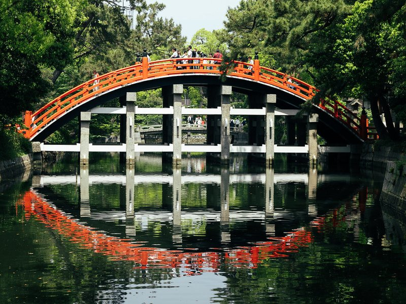
Sumiyoshi Taisha
Sumiyoshi-taisha, also known as Sumiyoshi Grand Shrine, is a Shinto shrine in Sumiyoshi-ku, Osaka, Osaka Prefecture, Japan. It is the main shrine of all the Sumiyoshi shrines. It gives its name to a style of shrine architecture known as Sumiyoshi-zukuri.